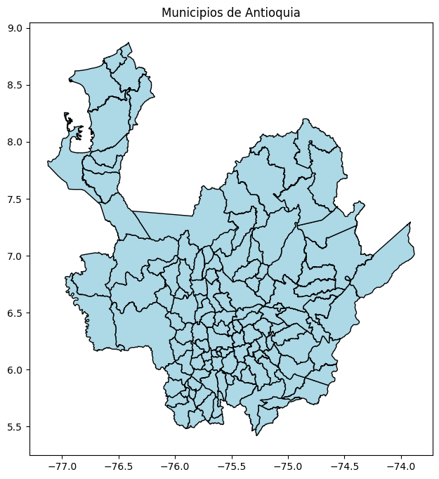
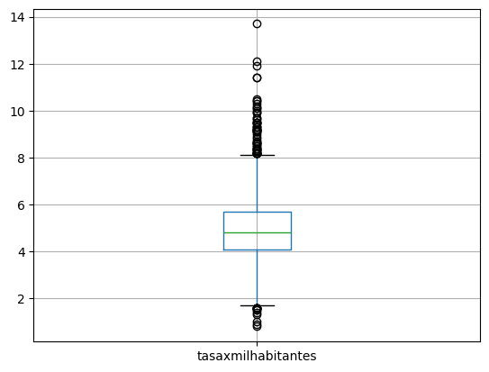
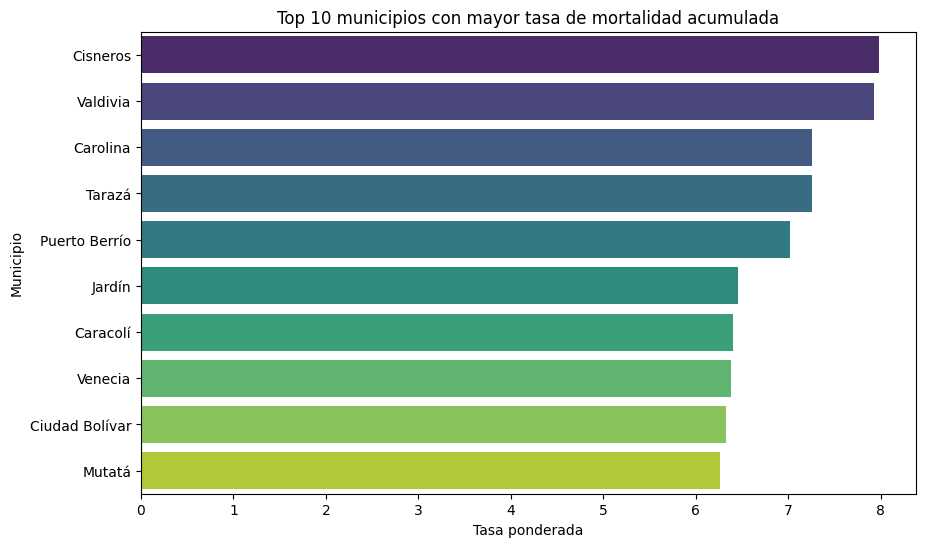
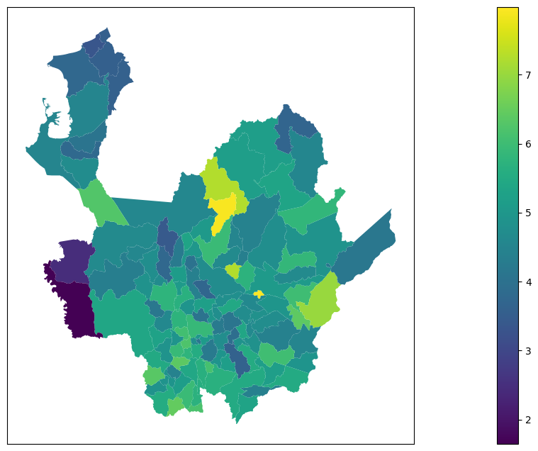
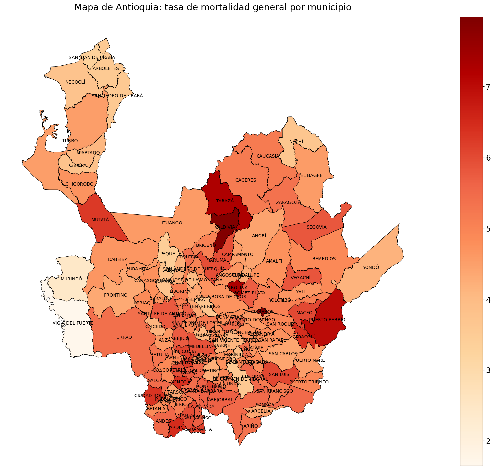
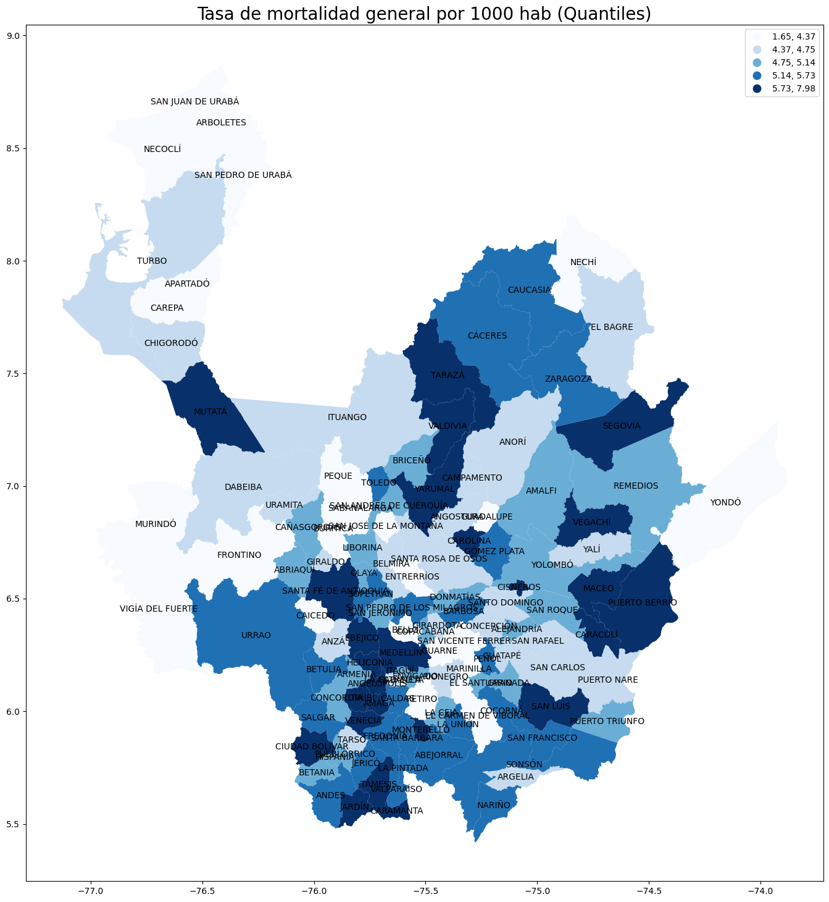
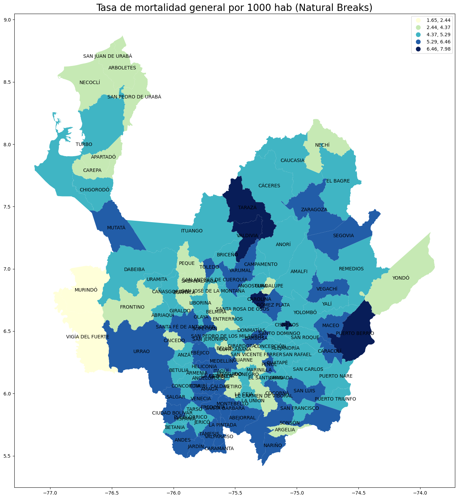

Implementacion#
Librerias#
import pandas as pd
import geopandas as gpd
import matplotlib.pyplot as plt
import janitor as jan
import seaborn as sns
import warnings
warnings.filterwarnings("ignore")
Funciones utilizadas#
def Summary(data, sheet):
print(f"Hoja: {sheet}")
# Crear la tabla de resumen
resumen = {
"Cantidad de filas": data.shape[0],
"Cantidad de columnas": data.shape[1],
"Datos faltantes": data.isnull().sum().sum(),
"Filas duplicadas": data.duplicated().sum()
}
# Convertir el resumen en un DataFrame
ResumenHoja = pd.DataFrame(resumen, index=["Resumen"])
print("\nResumen:")
display(ResumenHoja)
print("\nEncabezado:")
display(data.head())
Cargado de shapefile#
Se realiza el cargado del shapefile del DANE correspondiente a los municipios
shapefile_path = r"C:/Users/User/Documents/DatavizUN/MGN2024_MPIO_POLITICO/MGN_ADM_MPIO_GRAFICO.shp"
gdf = gpd.read_file(shapefile_path, encoding='utf-8')
gdf.head(n=5)
| dpto_ccdgo | mpio_ccdgo | mpio_cdpmp | dpto_cnmbr | mpio_cnmbr | mpio_crslc | mpio_tipo | mpio_narea | mpio_nano | shape_Leng | shape_Area | geometry | |
|---|---|---|---|---|---|---|---|---|---|---|---|---|
| 0 | 05 | 001 | 05001 | ANTIOQUIA | MEDELLÍN | 1965 | MUNICIPIO | 374.834005 | 2024 | 1.035380 | 0.030608 | POLYGON ((-75.66974 6.3736, -75.66965 6.3736, ... |
| 1 | 05 | 002 | 05002 | ANTIOQUIA | ABEJORRAL | 1814 | MUNICIPIO | 507.141095 | 2024 | 1.158504 | 0.041384 | POLYGON ((-75.46938 5.94575, -75.46897 5.94571... |
| 2 | 05 | 004 | 05004 | ANTIOQUIA | ABRIAQUÍ | 1912 | MUNICIPIO | 296.894050 | 2024 | 0.812183 | 0.024248 | POLYGON ((-76.08351 6.7505, -76.08325 6.75048,... |
| 3 | 05 | 021 | 05021 | ANTIOQUIA | ALEJANDRÍA | Decreto departamental 304 de 1907 | MUNICIPIO | 128.932153 | 2024 | 0.705200 | 0.010535 | POLYGON ((-75.0332 6.41586, -75.03313 6.41585,... |
| 4 | 05 | 030 | 05030 | ANTIOQUIA | AMAGÁ | 1912 | MUNICIPIO | 84.132477 | 2024 | 0.445533 | 0.006867 | POLYGON ((-75.67587 6.08561, -75.6754 6.08491,... |
Podemos observar que el shapefile descargado contiene el mpio_ccdgo, geometry y mpio_cnmbr
filtramos los municipios de antioquia
antioquia=gdf[gdf['dpto_cnmbr']=='ANTIOQUIA']
antioquia
| dpto_ccdgo | mpio_ccdgo | mpio_cdpmp | dpto_cnmbr | mpio_cnmbr | mpio_crslc | mpio_tipo | mpio_narea | mpio_nano | shape_Leng | shape_Area | geometry | |
|---|---|---|---|---|---|---|---|---|---|---|---|---|
| 0 | 05 | 001 | 05001 | ANTIOQUIA | MEDELLÍN | 1965 | MUNICIPIO | 374.834005 | 2024 | 1.035380 | 0.030608 | POLYGON ((-75.66974 6.3736, -75.66965 6.3736, ... |
| 1 | 05 | 002 | 05002 | ANTIOQUIA | ABEJORRAL | 1814 | MUNICIPIO | 507.141095 | 2024 | 1.158504 | 0.041384 | POLYGON ((-75.46938 5.94575, -75.46897 5.94571... |
| 2 | 05 | 004 | 05004 | ANTIOQUIA | ABRIAQUÍ | 1912 | MUNICIPIO | 296.894050 | 2024 | 0.812183 | 0.024248 | POLYGON ((-76.08351 6.7505, -76.08325 6.75048,... |
| 3 | 05 | 021 | 05021 | ANTIOQUIA | ALEJANDRÍA | Decreto departamental 304 de 1907 | MUNICIPIO | 128.932153 | 2024 | 0.705200 | 0.010535 | POLYGON ((-75.0332 6.41586, -75.03313 6.41585,... |
| 4 | 05 | 030 | 05030 | ANTIOQUIA | AMAGÁ | 1912 | MUNICIPIO | 84.132477 | 2024 | 0.445533 | 0.006867 | POLYGON ((-75.67587 6.08561, -75.6754 6.08491,... |
| ... | ... | ... | ... | ... | ... | ... | ... | ... | ... | ... | ... | ... |
| 120 | 05 | 885 | 05885 | ANTIOQUIA | YALÍ | Ordenanza 11 de Noviembrebre 12 de 1959 | MUNICIPIO | 440.856388 | 2024 | 1.419594 | 0.036051 | POLYGON ((-74.63958 6.79709, -74.63947 6.79702... |
| 121 | 05 | 887 | 05887 | ANTIOQUIA | YARUMAL | 1911 | MUNICIPIO | 712.572037 | 2024 | 1.736343 | 0.058278 | POLYGON ((-75.31703 7.23923, -75.31698 7.23923... |
| 122 | 05 | 890 | 05890 | ANTIOQUIA | YOLOMBÓ | Decreto departamental 384 del 12 de Abril de 1883 | MUNICIPIO | 943.972083 | 2024 | 2.921175 | 0.077177 | POLYGON ((-75.02661 6.83466, -75.0265 6.83463,... |
| 123 | 05 | 893 | 05893 | ANTIOQUIA | YONDÓ | Ordenanza 38 de Noviembrebre 23 de 1978 | MUNICIPIO | 1894.981160 | 2024 | 2.348293 | 0.155050 | POLYGON ((-73.92444 7.26587, -73.92436 7.2649,... |
| 124 | 05 | 895 | 05895 | ANTIOQUIA | ZARAGOZA | 1770 | MUNICIPIO | 1167.398721 | 2024 | 2.446658 | 0.095614 | POLYGON ((-74.76103 7.72477, -74.76084 7.7245,... |
125 rows × 12 columns
se crea un grafico para revisar que se hizo correctamente
#Grafico del departamento de antioquia y sus municipios
antioquia.plot(edgecolor="black", facecolor="lightblue", figsize=(8,8))
plt.title("Municipios de Antioquia")
plt.show()

Podemos observar que el filtrado se realizo correctamente
Cargado del dataset#
df=pd.read_csv('Mortalidad_General_en_el_departamento_de_Antioquia_desde_2005_20250913.csv',sep=',',header=0,encoding='utf-8')
df.head()
| NombreMunicipio | CodigoMunicipio | Ubicacion | NombreRegion | CodigoRegion | Año | NumeroCasos | TasaXMilHabitantes | |
|---|---|---|---|---|---|---|---|---|
| 0 | Abejorral | 5002 | POINT (-75.427045 5.79145) | ORIENTE | 7 | 2005 | 146 | 7.2 |
| 1 | Abriaquí | 5004 | POINT (-76.064563 6.63197) | OCCIDENTE | 6 | 2005 | 13 | 4.8 |
| 2 | Alejandría | 5021 | POINT (-75.141258 6.376923) | ORIENTE | 7 | 2005 | 27 | 7.1 |
| 3 | Amagá | 5030 | POINT (-75.703216 6.04063) | SUROESTE | 8 | 2005 | 137 | 5.0 |
| 4 | Amalfi | 5031 | POINT (-75.075028 6.907385) | NORDESTE | 4 | 2005 | 112 | 5.5 |
Preparacion del dataset#
Se va a revisar primero el dataset antes de realizar cualquier tipo de preparacion
Summary(df,'df')
Hoja: df
Resumen:
| Cantidad de filas | Cantidad de columnas | Datos faltantes | Filas duplicadas | |
|---|---|---|---|---|
| Resumen | 2125 | 8 | 0 | 0 |
Encabezado:
| NombreMunicipio | CodigoMunicipio | Ubicacion | NombreRegion | CodigoRegion | Año | NumeroCasos | TasaXMilHabitantes | |
|---|---|---|---|---|---|---|---|---|
| 0 | Abejorral | 5002 | POINT (-75.427045 5.79145) | ORIENTE | 7 | 2005 | 146 | 7.2 |
| 1 | Abriaquí | 5004 | POINT (-76.064563 6.63197) | OCCIDENTE | 6 | 2005 | 13 | 4.8 |
| 2 | Alejandría | 5021 | POINT (-75.141258 6.376923) | ORIENTE | 7 | 2005 | 27 | 7.1 |
| 3 | Amagá | 5030 | POINT (-75.703216 6.04063) | SUROESTE | 8 | 2005 | 137 | 5.0 |
| 4 | Amalfi | 5031 | POINT (-75.075028 6.907385) | NORDESTE | 4 | 2005 | 112 | 5.5 |
df.shape
(2125, 8)
df.columns
Index(['NombreMunicipio', 'CodigoMunicipio', 'Ubicacion', 'NombreRegion',
'CodigoRegion', 'Año', 'NumeroCasos', 'TasaXMilHabitantes'],
dtype='object')
df.info()
<class 'pandas.core.frame.DataFrame'>
RangeIndex: 2125 entries, 0 to 2124
Data columns (total 8 columns):
# Column Non-Null Count Dtype
--- ------ -------------- -----
0 NombreMunicipio 2125 non-null object
1 CodigoMunicipio 2125 non-null int64
2 Ubicacion 2125 non-null object
3 NombreRegion 2125 non-null object
4 CodigoRegion 2125 non-null int64
5 Año 2125 non-null int64
6 NumeroCasos 2125 non-null int64
7 TasaXMilHabitantes 2125 non-null float64
dtypes: float64(1), int64(4), object(3)
memory usage: 132.9+ KB
Podemos observar como esta el dataset antes de realizar cualquier preparacion, a partir de ahora se empezara a preparar el dataset para el merge
#utilizamos janitor para limpiar los nombres de la base de datos
df=jan.clean_names(df)
df
| nombremunicipio | codigomunicipio | ubicacion | nombreregion | codigoregion | ano | numerocasos | tasaxmilhabitantes | |
|---|---|---|---|---|---|---|---|---|
| 0 | Abejorral | 5002 | POINT (-75.427045 5.79145) | ORIENTE | 7 | 2005 | 146 | 7.2 |
| 1 | Abriaquí | 5004 | POINT (-76.064563 6.63197) | OCCIDENTE | 6 | 2005 | 13 | 4.8 |
| 2 | Alejandría | 5021 | POINT (-75.141258 6.376923) | ORIENTE | 7 | 2005 | 27 | 7.1 |
| 3 | Amagá | 5030 | POINT (-75.703216 6.04063) | SUROESTE | 8 | 2005 | 137 | 5.0 |
| 4 | Amalfi | 5031 | POINT (-75.075028 6.907385) | NORDESTE | 4 | 2005 | 112 | 5.5 |
| ... | ... | ... | ... | ... | ... | ... | ... | ... |
| 2120 | Yalí | 5885 | POINT (-74.842107 6.675328) | NORDESTE | 4 | 2021 | 56 | 7.2 |
| 2121 | Yarumal | 5887 | POINT (-75.416733 6.963321) | NORTE | 5 | 2021 | 318 | 7.3 |
| 2122 | Yolombó | 5890 | POINT (-75.01183 6.59926) | NORDESTE | 4 | 2021 | 162 | 6.8 |
| 2123 | Yondó | 5893 | POINT (-73.909599 7.007398) | MAGDALENA MEDIO | 3 | 2021 | 122 | 6.0 |
| 2124 | Zaragoza | 5895 | POINT (-74.868261 7.492548) | BAJO CAUCA | 2 | 2021 | 132 | 5.1 |
2125 rows × 8 columns
#convertir en objetos a variables que fueron importadas como flotantes para realizar una mejor manipulacion
df=df.rename(columns={'ano':'anio'})
df['anio']=df['anio'].astype(object)
df['codigomunicipio']=df['codigomunicipio'].astype(object)
df['codigoregion']=df['codigoregion'].astype(object)
df.info()
<class 'pandas.core.frame.DataFrame'>
RangeIndex: 2125 entries, 0 to 2124
Data columns (total 8 columns):
# Column Non-Null Count Dtype
--- ------ -------------- -----
0 nombremunicipio 2125 non-null object
1 codigomunicipio 2125 non-null object
2 ubicacion 2125 non-null object
3 nombreregion 2125 non-null object
4 codigoregion 2125 non-null object
5 anio 2125 non-null object
6 numerocasos 2125 non-null int64
7 tasaxmilhabitantes 2125 non-null float64
dtypes: float64(1), int64(1), object(6)
memory usage: 132.9+ KB
Podemos observar que los cambios se guardaron correctamente
revisamos si hay datos faltantes en el dataset
#revision de datos faltantes
df.isna().sum()
nombremunicipio 0
codigomunicipio 0
ubicacion 0
nombreregion 0
codigoregion 0
anio 0
numerocasos 0
tasaxmilhabitantes 0
dtype: int64
podemos observar que no habia datos faltantes en el dataset
revisamos los outliers de la tasaxmilhabitantes
df['tasaxmilhabitantes'].describe()
df.boxplot(column='tasaxmilhabitantes')
<Axes: >

Podemos observar que existen valores atipicos en la tasa de mortalidad por mil habitantes, siendo normalmente mayores a 8 en la tasa los que se consideran atipicos, ademas de valores mas bajos
Revisamos los atipicos mediante el rango intercuartilico
Q1 = df['tasaxmilhabitantes'].quantile(0.25)
Q3 = df['tasaxmilhabitantes'].quantile(0.75)
IQR = Q3 - Q1
# Definir límites
limite_inferior = Q1 - 1.5 * IQR
limite_superior = Q3 + 1.5 * IQR
# Filtrar los outliers
outliers = df[(df['tasaxmilhabitantes'] < limite_inferior) | (df['tasaxmilhabitantes'] > limite_superior)]
# Mostrar las filas con valores atípicos
print(outliers.to_string())
nombremunicipio codigomunicipio ubicacion nombreregion codigoregion anio numerocasos tasaxmilhabitantes
27 Caramanta 5145 POINT (-75.644483 5.548681) SUROESTE 8 2005 45 8.2
32 Cisneros 5190 POINT (-75.087684 6.538526) NORDESTE 4 2005 83 8.6
53 Granada 5313 POINT (-75.18443 6.14432) ORIENTE 7 2005 99 10.1
71 Montebello 5467 POINT (-75.524621 5.945694) SUROESTE 8 2005 69 9.2
94 San Luis 5660 POINT (-74.994436 6.042772) ORIENTE 7 2005 110 10.0
115 Valdivia 5854 POINT (-75.391627 7.292119) NORTE 5 2005 146 8.4
144 Briceño 5107 POINT (-75.551532 7.110465) NORTE 5 2006 69 8.2
154 Carolina 5150 POINT (-75.281494 6.723626) NORTE 5 2006 37 9.5
197 Murindó 5475 POINT (-76.82131 6.981328) URABA 9 2006 5 1.4
205 Puerto Berrío 5579 POINT (-74.402022 6.490753) MAGDALENA MEDIO 3 2006 323 9.2
233 Tarazá 5790 POINT (-75.39983 7.58049) BAJO CAUCA 2 2006 216 9.6
240 Valdivia 5854 POINT (-75.391627 7.292119) NORTE 5 2006 186 13.7
244 Vigía del Fuerte 5873 POINT (-76.896085 6.589081) URABA 9 2006 13 1.6
358 Tarazá 5790 POINT (-75.39983 7.58049) BAJO CAUCA 2 2007 213 9.3
365 Valdivia 5854 POINT (-75.391627 7.292119) NORTE 5 2007 161 11.9
369 Vigía del Fuerte 5873 POINT (-76.896085 6.589081) URABA 9 2007 13 1.6
404 Carolina 5150 POINT (-75.281494 6.723626) NORTE 5 2008 37 9.5
490 Valdivia 5854 POINT (-75.391627 7.292119) NORTE 5 2008 143 10.5
532 Cisneros 5190 POINT (-75.087684 6.538526) NORDESTE 4 2009 89 9.3
608 Tarazá 5790 POINT (-75.39983 7.58049) BAJO CAUCA 2 2009 240 10.2
615 Valdivia 5854 POINT (-75.391627 7.292119) NORTE 5 2009 165 12.1
619 Vigía del Fuerte 5873 POINT (-76.896085 6.589081) URABA 9 2009 13 1.6
628 Amagá 5030 POINT (-75.703216 6.04063) SUROESTE 8 2010 247 8.8
657 Cisneros 5190 POINT (-75.087684 6.538526) NORDESTE 4 2010 81 8.4
705 Puerto Berrío 5579 POINT (-74.402022 6.490753) MAGDALENA MEDIO 3 2010 299 8.2
740 Valdivia 5854 POINT (-75.391627 7.292119) NORTE 5 2010 132 9.7
744 Vigía del Fuerte 5873 POINT (-76.896085 6.589081) URABA 9 2010 8 0.9
751 Abriaquí 5004 POINT (-76.064563 6.63197) OCCIDENTE 6 2011 27 10.1
869 Vigía del Fuerte 5873 POINT (-76.896085 6.589081) URABA 9 2011 14 1.6
874 Zaragoza 5895 POINT (-74.868261 7.492548) BAJO CAUCA 2 2011 196 8.2
947 Murindó 5475 POINT (-76.82131 6.981328) URABA 9 2012 7 1.6
958 Remedios 5604 POINT (-74.69368 7.02808) NORDESTE 4 2012 250 9.4
1119 Vigía del Fuerte 5873 POINT (-76.896085 6.589081) URABA 9 2013 7 0.8
1154 Carolina 5150 POINT (-75.281494 6.723626) NORTE 5 2014 36 9.2
1157 Cisneros 5190 POINT (-75.087684 6.538526) NORDESTE 4 2014 80 8.3
1197 Murindó 5475 POINT (-76.82131 6.981328) URABA 9 2014 7 1.6
1282 Cisneros 5190 POINT (-75.087684 6.538526) NORDESTE 4 2015 93 9.7
1337 Salgar 5642 POINT (-75.979184 5.963438) SUROESTE 8 2015 192 10.4
1369 Vigía del Fuerte 5873 POINT (-76.896085 6.589081) URABA 9 2015 13 1.5
1407 Cisneros 5190 POINT (-75.087684 6.538526) NORDESTE 4 2016 82 8.5
1440 La Pintada 5390 POINT (-75.606525 5.747143) SUROESTE 8 2016 72 8.6
1490 Valdivia 5854 POINT (-75.391627 7.292119) NORTE 5 2016 113 8.3
1506 Angelópolis 5036 POINT (-75.710262 6.111531) SUROESTE 8 2017 53 9.2
1526 Caracolí 5142 POINT (-74.756712 6.410876) MAGDALENA MEDIO 3 2017 45 9.9
1619 Vigía del Fuerte 5873 POINT (-76.896085 6.589081) URABA 9 2017 13 1.5
1698 Mutatá 5480 POINT (-76.436928 7.245319) URABA 9 2018 122 8.7
1733 Tarazá 5790 POINT (-75.39983 7.58049) BAJO CAUCA 2 2018 255 9.5
1744 Vigía del Fuerte 5873 POINT (-76.896085 6.589081) URABA 9 2018 9 1.0
1782 Cisneros 5190 POINT (-75.087684 6.538526) NORDESTE 4 2019 81 8.2
1823 Mutatá 5480 POINT (-76.436928 7.245319) URABA 9 2019 131 9.2
1869 Vigía del Fuerte 5873 POINT (-76.896085 6.589081) URABA 9 2019 12 1.3
1892 Betania 5091 POINT (-75.976261 5.745292) SUROESTE 8 2020 92 8.9
1904 Carolina 5150 POINT (-75.281494 6.723626) NORTE 5 2020 34 8.6
2006 Angelópolis 5036 POINT (-75.710262 6.111531) SUROESTE 8 2021 49 8.3
2027 Caramanta 5145 POINT (-75.644483 5.548681) SUROESTE 8 2021 43 9.1
2032 Cisneros 5190 POINT (-75.087684 6.538526) NORDESTE 4 2021 115 11.4
2033 Ciudad Bolívar 5101 POINT (-76.020994 5.850015) SUROESTE 8 2021 240 9.0
2040 Ebéjico 5240 POINT (-75.768514 6.326468) OCCIDENTE 6 2021 104 8.4
2057 Heliconia 5347 POINT (-75.733349 6.207128) OCCIDENTE 6 2021 54 9.9
2062 Jericó 5368 POINT (-75.786118 5.791557) SUROESTE 8 2021 121 8.7
2068 Maceo 5425 POINT (-74.673429 6.530691) MAGDALENA MEDIO 3 2021 87 10.4
2070 Medellín 5001 POINT (-75.564739 6.253104) VALLE DE ABURRA 1 2021 21917 8.5
2073 Mutatá 5480 POINT (-76.436928 7.245319) URABA 9 2021 125 8.6
2080 Puerto Berrío 5579 POINT (-74.402022 6.490753) MAGDALENA MEDIO 3 2021 347 8.4
2094 San Luis 5660 POINT (-74.994436 6.042772) ORIENTE 7 2021 137 10.3
2100 Santa Bárbara 5679 POINT (-75.568167 5.874215) SUROESTE 8 2021 226 8.2
2101 Santa Fe de Antioquia 5042 POINT (-75.827742 6.556455) OCCIDENTE 6 2021 249 9.1
2110 Titiribí 5809 POINT (-75.793717 6.063419) SUROESTE 8 2021 103 9.5
2111 Toledo 5819 POINT (-75.691555 7.01096) NORTE 5 2021 42 8.2
2115 Valdivia 5854 POINT (-75.391627 7.292119) NORTE 5 2021 130 9.1
2117 Vegachí 5858 POINT (-74.798745 6.77151) NORDESTE 4 2021 114 9.3
2118 Venecia 5861 POINT (-75.733897 5.963555) SUROESTE 8 2021 136 11.4
Podemos observar que hay datos atipicos mucho mayores y mucho menores de lo usual, sin embargo algunos de estos valores se pueden deber a otros factores como el tamaño de la poblacion del municipio, por lo que no se van a imputar debido a ser casos reales.
realizamos una descripcion de las variables del dataset usando describe
#resumen de variables numericas
round(df.describe(),2)
| numerocasos | tasaxmilhabitantes | |
|---|---|---|
| count | 2125.00 | 2125.00 |
| mean | 253.09 | 5.01 |
| std | 1236.81 | 1.40 |
| min | 5.00 | 0.80 |
| 25% | 42.00 | 4.10 |
| 50% | 82.00 | 4.80 |
| 75% | 157.00 | 5.70 |
| max | 21917.00 | 13.70 |
#resumen de variables categoricas
round(df.describe(include="object"),2)
| nombremunicipio | codigomunicipio | ubicacion | nombreregion | codigoregion | anio | |
|---|---|---|---|---|---|---|
| count | 2125 | 2125 | 2125 | 2125 | 2125 | 2125 |
| unique | 125 | 125 | 125 | 9 | 9 | 17 |
| top | Abejorral | 5002 | POINT (-75.427045 5.79145) | ORIENTE | 7 | 2005 |
| freq | 17 | 17 | 17 | 391 | 391 | 125 |
revisamos el formato de los codigos de los 2 dataset a ver si hay diferencias entre ellos
#codigo de municipio del df
codigo_1=df['codigomunicipio']
codigo_1
0 5002
1 5004
2 5021
3 5030
4 5031
...
2120 5885
2121 5887
2122 5890
2123 5893
2124 5895
Name: codigomunicipio, Length: 2125, dtype: object
# codigo de municipios de antioquia del sahpefile
codigo_2=antioquia['mpio_cdpmp']
codigo_2
0 05001
1 05002
2 05004
3 05021
4 05030
...
120 05885
121 05887
122 05890
123 05893
124 05895
Name: mpio_cdpmp, Length: 125, dtype: object
podemos observar que ambos codigos estan en diferente formato, debemos cambiar la forma en la que se escribe el codigo del dataframe para poder hacer el merge
#se le añade zfill 5 debido a que es el codigo de municipio
codigo_1= codigo_1.astype(str).str.zfill(5)
codigo_1
0 05002
1 05004
2 05021
3 05030
4 05031
...
2120 05885
2121 05887
2122 05890
2123 05893
2124 05895
Name: codigomunicipio, Length: 2125, dtype: object
Realizamos un groupby antes de realizar el merge para mostrar en el mapa la tasa promedio general de cada municipio y el numero de casos total a lo largo de los años
#se reescribe la variable de codigo municipio con el codigo arrregaldo
df['codigomunicipio']=codigo_1
#recuperamos la poblacion original en el dataset
df['poblacion']=df["numerocasos"] * 1000 / df["tasaxmilhabitantes"]
#realizamos el groupby para encontrar los casos totales y la poblacion total
df_agrupado=df.groupby(["codigomunicipio", "nombremunicipio"], as_index=False).agg(
casos_totales=("numerocasos", "sum"),
poblacion_total=("poblacion", "sum")
)
#reconstruimos la variable de tasaxmilhabitantes ponderada para usarse en los mapas
df_agrupado["tasa_x_mil"] = (
df_agrupado["casos_totales"] / df_agrupado["poblacion_total"] * 1000
)
Se realiza un Barplot de los 10 con mayor tasa ponderada de mortalidad general
top10 = df_agrupado.nlargest(10, "tasa_x_mil")
plt.figure(figsize=(10,6))
sns.barplot(data=top10, x="tasa_x_mil", y="nombremunicipio", palette="viridis")
plt.title("Top 10 municipios con mayor tasa de mortalidad acumulada")
plt.xlabel("Tasa ponderada")
plt.ylabel("Municipio")
plt.show()

# Eliminar NombreMunicipio para no duplicar con mpio_cnmbr en el shapefile
df_agrupado_limpio = df_agrupado.drop(columns="nombremunicipio")
Merge de los datos#
#se hace otro codigo_municipio para realizar el merge
antioquia['codigomunicipio']=codigo_2
#se hace el merge de los datos
Datos_tot = pd.merge(antioquia,df_agrupado_limpio, on ='codigomunicipio', how = 'inner')
Datos_tot.head(n=3)
| dpto_ccdgo | mpio_ccdgo | mpio_cdpmp | dpto_cnmbr | mpio_cnmbr | mpio_crslc | mpio_tipo | mpio_narea | mpio_nano | shape_Leng | shape_Area | geometry | codigomunicipio | casos_totales | poblacion_total | tasa_x_mil | |
|---|---|---|---|---|---|---|---|---|---|---|---|---|---|---|---|---|
| 0 | 05 | 001 | 05001 | ANTIOQUIA | MEDELLÍN | 1965 | MUNICIPIO | 374.834005 | 2024 | 1.035380 | 0.030608 | POLYGON ((-75.66974 6.3736, -75.66965 6.3736, ... | 05001 | 229879 | 3.899727e+07 | 5.894747 |
| 1 | 05 | 002 | 05002 | ANTIOQUIA | ABEJORRAL | 1814 | MUNICIPIO | 507.141095 | 2024 | 1.158504 | 0.041384 | POLYGON ((-75.46938 5.94575, -75.46897 5.94571... | 05002 | 2036 | 3.589878e+05 | 5.671502 |
| 2 | 05 | 004 | 05004 | ANTIOQUIA | ABRIAQUÍ | 1912 | MUNICIPIO | 296.894050 | 2024 | 0.812183 | 0.024248 | POLYGON ((-76.08351 6.7505, -76.08325 6.75048,... | 05004 | 220 | 4.539414e+04 | 4.846440 |
Datos_tot.columns
Index(['dpto_ccdgo', 'mpio_ccdgo', 'mpio_cdpmp', 'dpto_cnmbr', 'mpio_cnmbr',
'mpio_crslc', 'mpio_tipo', 'mpio_narea', 'mpio_nano', 'shape_Leng',
'shape_Area', 'geometry', 'codigomunicipio', 'casos_totales',
'poblacion_total', 'tasa_x_mil'],
dtype='object')
verificamos si se generaron valores NA
Datos_tot_aux=Datos_tot[['casos_totales','poblacion_total' ,'tasa_x_mil']]
Datos_tot_aux[Datos_tot_aux.isna().any(axis=1)]
| casos_totales | poblacion_total | tasa_x_mil |
|---|
Podemos observar que no se crearon datos faltantes a la hora de hacer el merge
Visualizacion de Graficos coropleticos#
se crearon diferentes graficos cloropleticos basados en la variable principal la cual es tasaxmil habitantes ponderada que fue encontrada anteriormente
antioquia['tasa']=Datos_tot['tasa_x_mil']
antioquia.plot(column="tasa",figsize=(30,8), legend=True)
plt.xticks([])
plt.yticks([])
([], [])

# Crear figura y ejes
fig, ax = plt.subplots(figsize=(30, 18))
# Mapa coroplético
antioquia.plot(
column="tasa",
cmap="OrRd",
linewidth=0.8,
ax=ax,
edgecolor="black",
legend=True
)
# Agregar etiquetas
for index, row in antioquia.iterrows():
xy = row['geometry'].centroid.coords[:]
plt.annotate(
row['mpio_cnmbr'],
xy=xy[0],
ha='center',
va='center',
fontsize=10
)
cax = fig.get_axes()[-1]
cax.tick_params(labelsize=18)
# Estética
ax.set_axis_off()
ax.set_title(
"Mapa de Antioquia: tasa de mortalidad general por municipio",
pad=15,
fontsize=20
)
plt.show()

Realizamos ademas graficos con cuantiles y natural breaks para tener un analisis mas completo
fig, ax = plt.subplots(figsize=(30, 18))
#Mapa con Quantiles
antioquia.plot(
column="tasa",
cmap="Blues",
scheme="Quantiles", # clasificación en cuantiles
k=5, # número de clases
legend=True,
ax=ax
)
for index, row in antioquia.iterrows():
xy = row['geometry'].centroid.coords[:]
xytext = row['geometry'].centroid.coords[:]
plt.annotate(
row['mpio_cnmbr'],
xy=xy[0],
xytext=xytext[0],
horizontalalignment='center',
verticalalignment='center'
)
ax.set_title("Tasa de mortalidad general por 1000 hab (Quantiles)",fontsize=20)
Text(0.5, 1.0, 'Tasa de mortalidad general por 1000 hab (Quantiles)')

# Mapa con Natural Breaks
fig, ax = plt.subplots(figsize=(30, 18))
antioquia.plot(
column="tasa",
cmap="YlGnBu",
scheme="NaturalBreaks",
k=5,
legend=True,
ax=ax
)
for index, row in antioquia.iterrows():
xy = row['geometry'].centroid.coords[:]
xytext = row['geometry'].centroid.coords[:]
plt.annotate(
row['mpio_cnmbr'],
xy=xy[0],
xytext=xytext[0],
horizontalalignment='center',
verticalalignment='center'
)
ax.set_title("Tasa de mortalidad general por 1000 hab (Natural Breaks)",fontsize=20)
plt.show()
